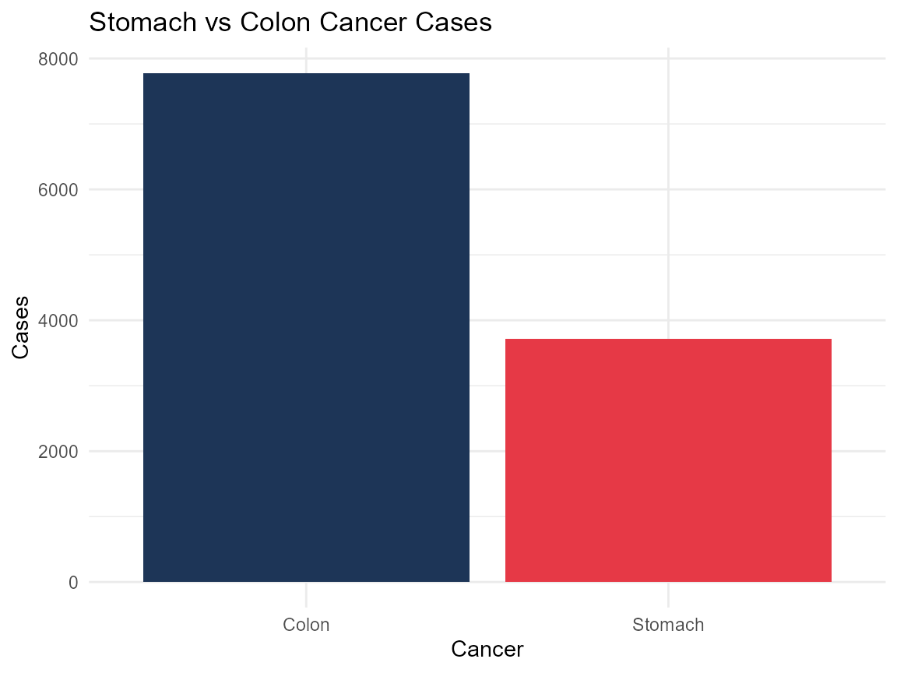
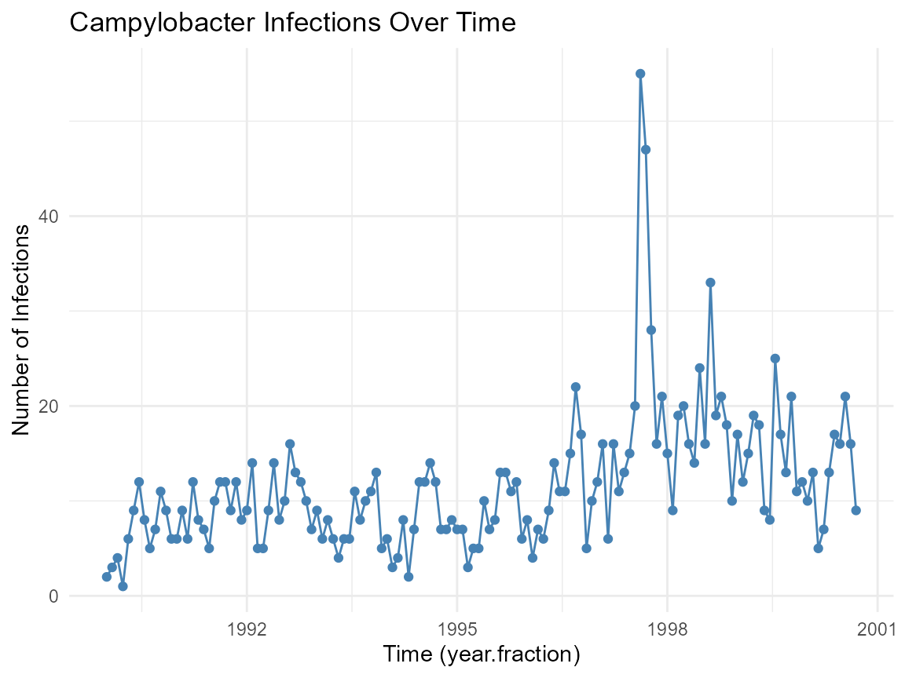
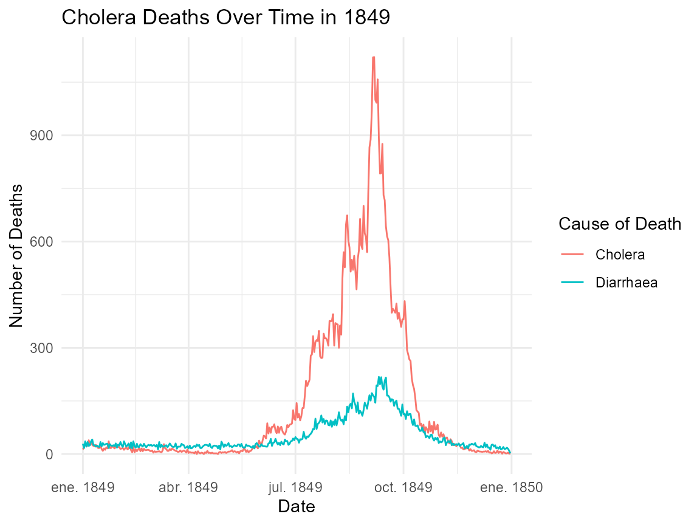

DigestiveDataSets: A Curated Collection of Digestive System and Gastrointestinal Disease Datasets
Source:vignettes/introduction_to_digestivedatasets.Rmd
introduction_to_digestivedatasets.Rmd
library(DigestiveDataSets)
library(ggplot2)
library(dplyr)
#>
#> Attaching package: 'dplyr'
#> The following objects are masked from 'package:stats':
#>
#> filter, lag
#> The following objects are masked from 'package:base':
#>
#> intersect, setdiff, setequal, unionIntroduction
The DigestiveDataSets package offers a comprehensive and
curated collection of datasets focused on the digestive system,
including the stomach, intestines, liver, pancreas, and related
disorders. This package encompasses a variety of data types
such as clinical trials, observational studies, experimental datasets,
cohort data, and case series, providing broad coverage of
gastrointestinal diseases.
Included datasets span a range of conditions such as gastritis, ulcers, pancreatitis, liver cirrhosis, colorectal diseases, colon cancer, Helicobacter pylori infection, irritable bowel syndrome, intestinal infections, and post-surgical outcomes. These datasets serve multiple purposes in education, clinical practice, and biomedical research, and are particularly valuable in fields such as gastroenterology, public health, and epidemiology.
All datasets within DigestiveDataSets
view_datasets_DigestiveDataSets()
#> [1] "anorexia_weight_change_df" "bleeding_ulcers_df"
#> [3] "campylobacter_infections_ts" "cholera_deaths_1849_tbl_df"
#> [5] "colon_stageBC_chemo_df" "colonoscopy_features_tbl_df"
#> [7] "crc_mirnas_pubmed_tbl_df" "cystic_fibrosis_snps_df"
#> [9] "digestive_cancer_survival_df" "ecoli_infections_df"
#> [11] "gastric_cancer_trial_df" "gi_damage_prevention_df"
#> [13] "helicobacter_children_tbl_df" "horse_colic_surgery_df"
#> [15] "ibs_cam_trials_df" "intestinal_smartpill_df"
#> [17] "intestinal_surgery_df" "liver_cirrhosis_prednisone_df"
#> [19] "lynch_ontario_families_df" "norovirus_derbyshire_df"
#> [21] "pancreatic_cancer_df" "pbc_mayo_survival_df"
#> [23] "post_ercp_pancreatitis_tbl_df" "ugi_bleeding_df"
#> [25] "weight_loss_df"Dataset Suffixes
Each dataset in the DigestiveDataSets package uses a
suffix to denote the type of R object:
_df: data frame_tbl_df: tibble_ts: time series
Below are selected example datasets included in the
DigestiveDataSets package:
digestive_cancer_survival_df: Digestive Cancer Survival Times.campylobacter_infections_ts: Campylobacter Infections Time Series.cholera_deaths_1849_tbl_df: Cholera Daily Deaths in England, 1849.
Data Visualization with DigestiveDataSets Data
Digestive Cancer Survival Times
# Minimal data processing WITHOUT tidyr
digestive_cancer_survival_df %>%
summarise(
Stomach = sum(stomach, na.rm = TRUE),
Colon = sum(colon, na.rm = TRUE)
) %>%
# Convert to plot-ready format WITHOUT tidyr
{data.frame(
Cancer = names(.),
Cases = unlist(., use.names = FALSE)
)} %>%
# Plot
ggplot(aes(x = Cancer, y = Cases)) +
geom_col(fill = c("#e63946", "#1d3557")) +
labs(title = "Stomach vs Colon Cancer Cases") +
theme_minimal()
Campylobacter Infections Time Series.
# Convert ts to numeric vector and numeric time
campy_df <- data.frame(
infections = as.numeric(campylobacter_infections_ts),
time = as.numeric(time(campylobacter_infections_ts))
)
# Plot without warning by using numeric 'time'
ggplot(campy_df, aes(x = time, y = infections)) +
geom_line(color = "steelblue") +
geom_point(color = "steelblue") +
labs(
title = "Campylobacter Infections Over Time",
x = "Time (year.fraction)",
y = "Number of Infections"
) +
theme_minimal()
Cholera Daily Deaths in England, 1849.
ggplot(cholera_deaths_1849_tbl_df, aes(x = date, y = deaths, color = cause_of_death)) +
geom_line() +
labs(
title = "Cholera Deaths Over Time in 1849",
x = "Date",
y = "Number of Deaths",
color = "Cause of Death"
) +
theme_minimal()
Conclusion
The DigestiveDataSets package offers a comprehensive,
well-curated collection of datasets focused on the digestive system and
related diseases. By including clinical trials, observational studies,
cohort data, and experimental datasets covering a broad spectrum of
gastrointestinal conditions, this package supports a wide range of
applications in research, education, and clinical practice.
For detailed information and full documentation of each dataset, please refer to the reference manual and help files included within the package.